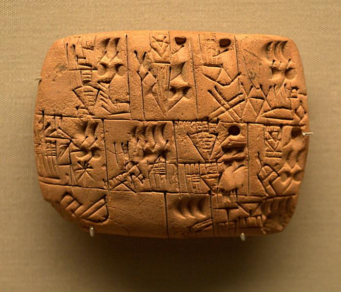

Де і коли була створена писемність?
Перше письмо, про яке знають історики, походить з території теперішнього Іраку. Близько 3200 р. до н.е., цивілізація під назвою шумери винайшла своєрідне письмо, яке називається клиноформа.
Клинопис спочатку був піктограмою, тобто використовував малюнки для представлення слів та ідей.
Наприклад , шумерське слово "пшениця" було представлено зображенням пшеничного стебла . Шумери використовували це написання, щоб допомогти їм стежити за товарами, які вони купували і продавали.
